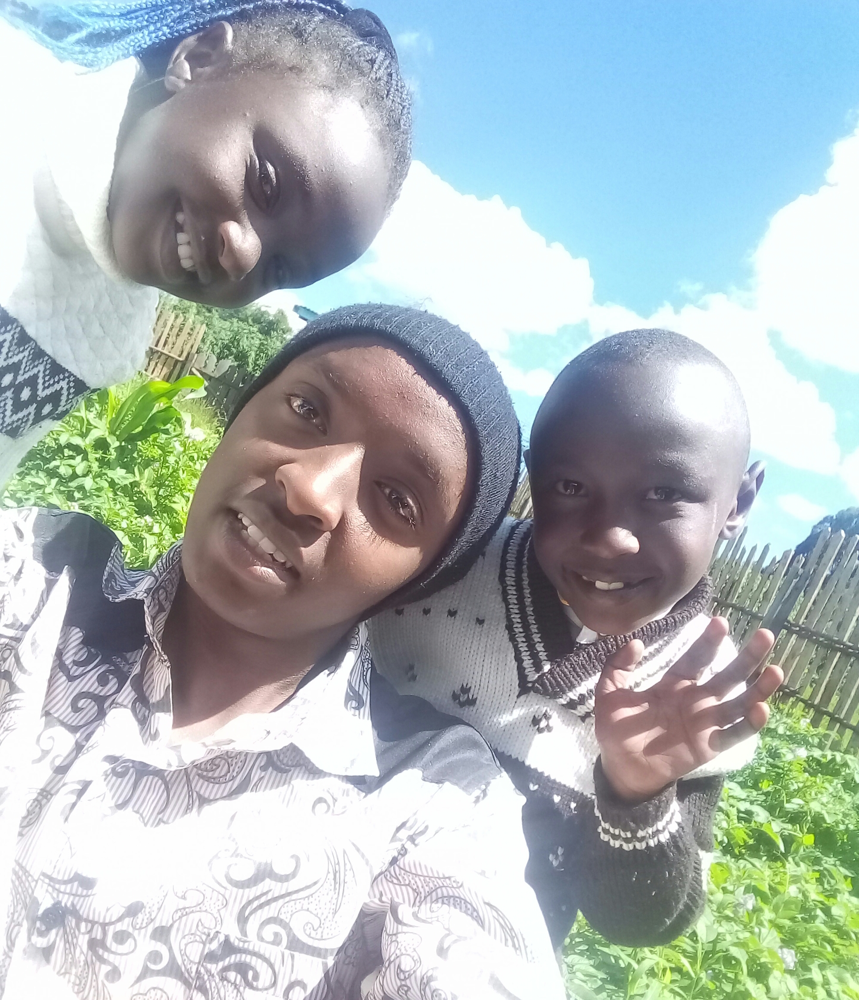
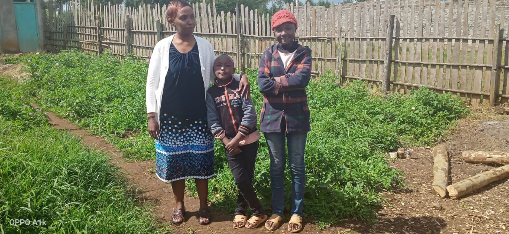
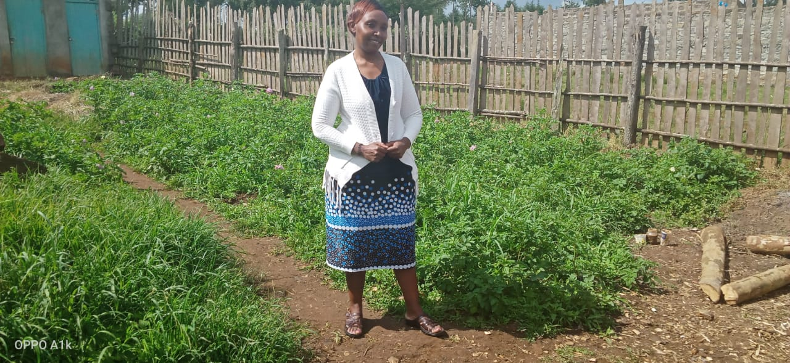

Being the only mother I know,she watched me take a path that was and is what has been her dream for her.And with every accolade I received in high school,despite the stumbles,she still was there to say "Son,I believe in you,you can make it".
And with the little she had,she was selfless enough to say"my family comes first".

Her words are a light in our darkest times and the brilliant ideas she shares with us spring up hope in our hearts.She is the core reason we so much believe in the power of our brains which is a gift the Muchiri's is reknown for.

When tears became the better part of us,she stood beside us shading light and brimming reality in our dimmed faith.

Day by day we always believed and still believe she is the supervisor and the director who echo's what is right cause each day she teaches us the true meaning of doing what is humane and mature enough to deserve reverence.She is the Women Rep in our family.
She is the only mother we have always desired to get back to when we travel distances for our studies,just to listen to her witted demeanours and tales about real life experiences about this doomed life.Thanks mother for installing an app called "commonsense" in our processing units 1st Floor.And together with the Commander-In-Chief of his heart they bring the one stable sprouting family,"The Muchiri's".
They say "Behind every successful man there is a woman" but I say "Behind every successful and ambitious engineer there is a woman",and she is the woman who has always taught me how to stick to my lanes when I seem to stray.